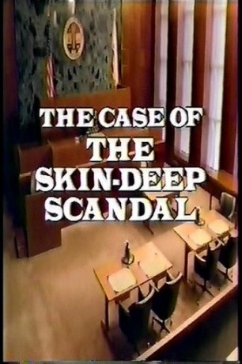
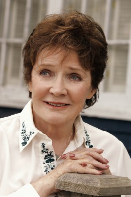

#7299 Perry Mason und die Formel ewiger Schönheit
Alternativ: Perry Mason: The Case of the Skin-Deep Scandal
 
 IMDB-Wertung: 6.8 / 10
IMDB-Wertung: 6.8 / 10  Metascore: 0
Metascore: 0 
The owner of a cosmetics company is unveiling a new cream which she claims she's been using. She's been keeping her age a secret and now reveals that she's 60 and owes her appearance to the cream. She's later killed and the formula missing. Her husband is arrested and Perry defends him.
Jahr: 1993
Dauer: 92 Minuten
FSK:
Land: USA Studio: NBCTonspuren: DD5.1 - ,
Untertitel:
Auflösung: 1080p (1424x1080) Größe: 3788 MB
Genre: Drama, Krimi, Mystery
Regisseur: Christian I. Nyby II
Drehbuch: Robert Schlitt
Soundtrack:
Darsteller:
 Raymond Burr als Perry Mason
Raymond Burr als Perry Mason Barbara Hale als Della Street
Barbara Hale als Della Street William R. Moses als Ken Malansky
William R. Moses als Ken Malansky Carmen Argenziano als Asst. Dist. Atty. Mallars
Carmen Argenziano als Asst. Dist. Atty. Mallars Jonathan Banks als Dr. Willam Shell
Jonathan Banks als Dr. Willam Shell-  Polly Bergen als Barbara Fox
 Morgan Fairchild als Alana Westbrook
Morgan Fairchild als Alana Westbrook- Tippi Hedren als Beverly Courtney
- Lauren Lane als Lauren Kent
 James McEachin als Lt Brock
James McEachin als Lt Brock Patrick O'Neal als Arthur Westbrook
Patrick O'Neal als Arthur Westbrook David Warner als Harley Griswold
David Warner als Harley Griswold- Tyler MacDuff als W.J. Cronkite
- Donnie L. Betts als Second guard
- Deborah Brown als Reporter #2
- John Nance als Male guest
- Tracy Smith als Bailiff
- Scott Thompson Baker als Scott Collins
- Michael Halsey als Motor Garage Owner
- Betsy Jones-Moreland als Judge Elinor Harrelson
- Dan Kopper als Erik Corbell
- Norm Silver als Stu
- Paul Borrillo als Security guard
- Marty Coniglio als Reporter #1
- Cort Michael Douglas als Garth
- Ron Headlee als Tournament official
- Cliff Karp als Mail boy
- Wayne Kennedy als Cop
- Annette Marin als Woman guest
- Susan Nyby als Office manager
Datei: X:\Person\Perry Mason\Perry Mason und die Formel ewiger Schönheit (1993, FSK, 1424x1080).mkv seit 15.10.2017
Festplatte: HD Collection-7+mehr(A-Z)+Person
 Es gibt insgesamt 20 Filme in der Gruppe 'Person\Perry Mason'
Es gibt insgesamt 20 Filme in der Gruppe 'Person\Perry Mason'